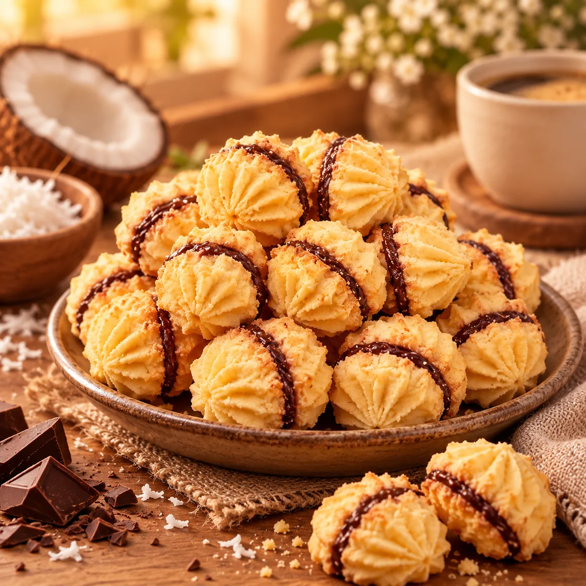
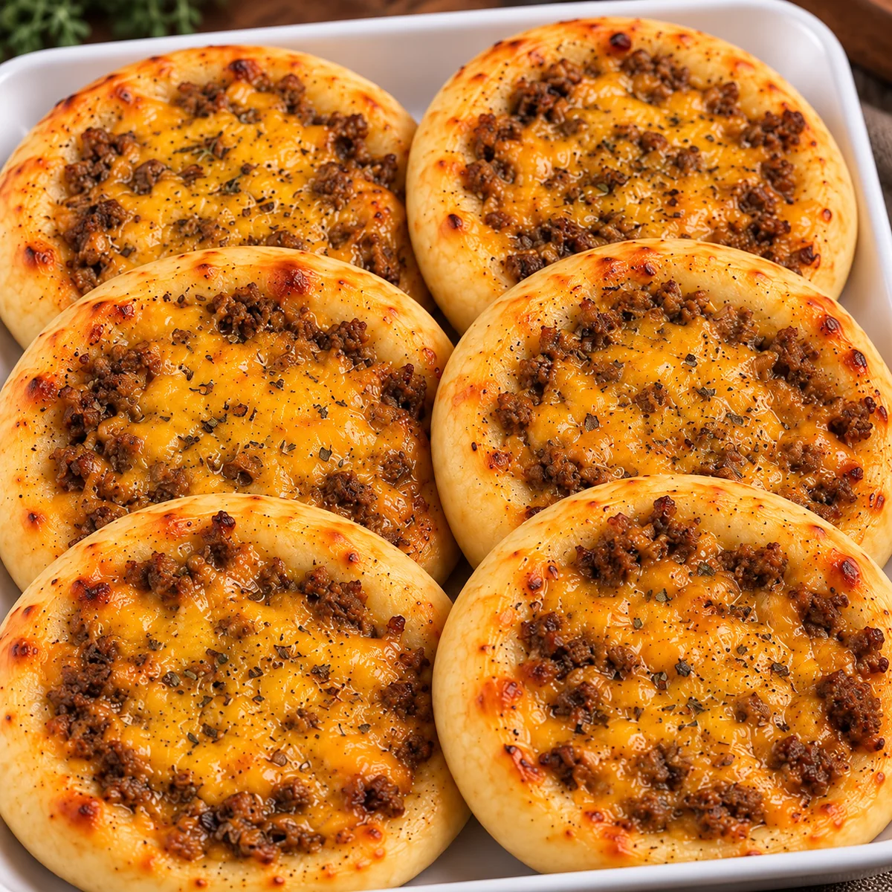
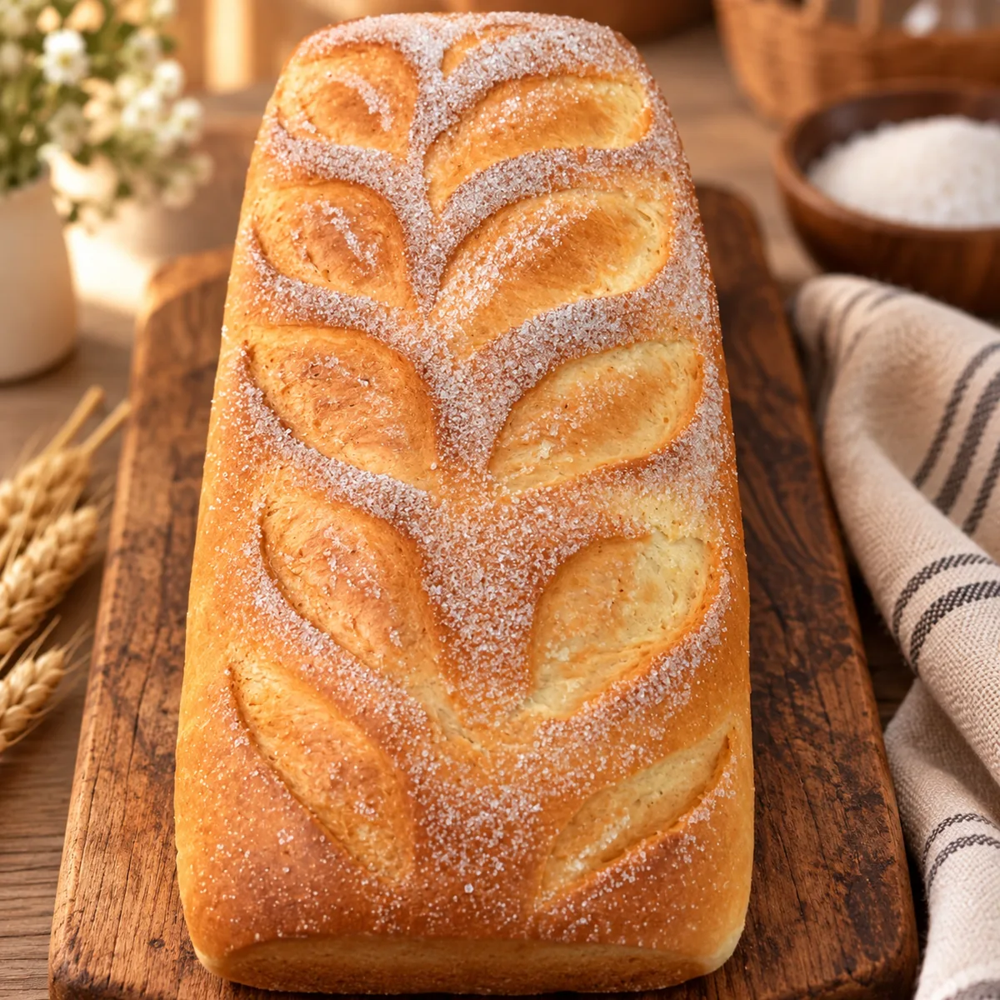
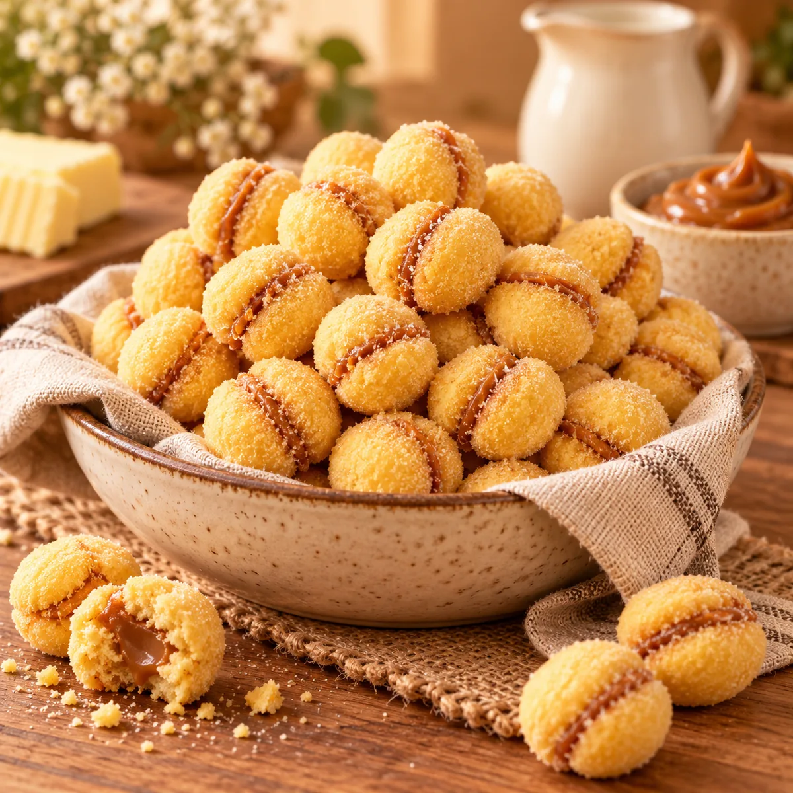
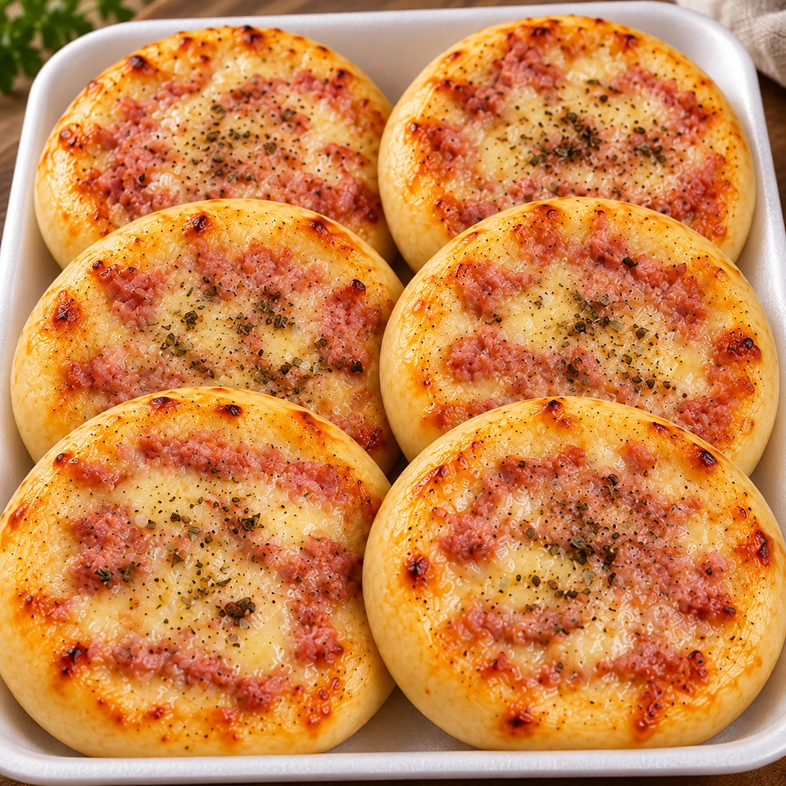
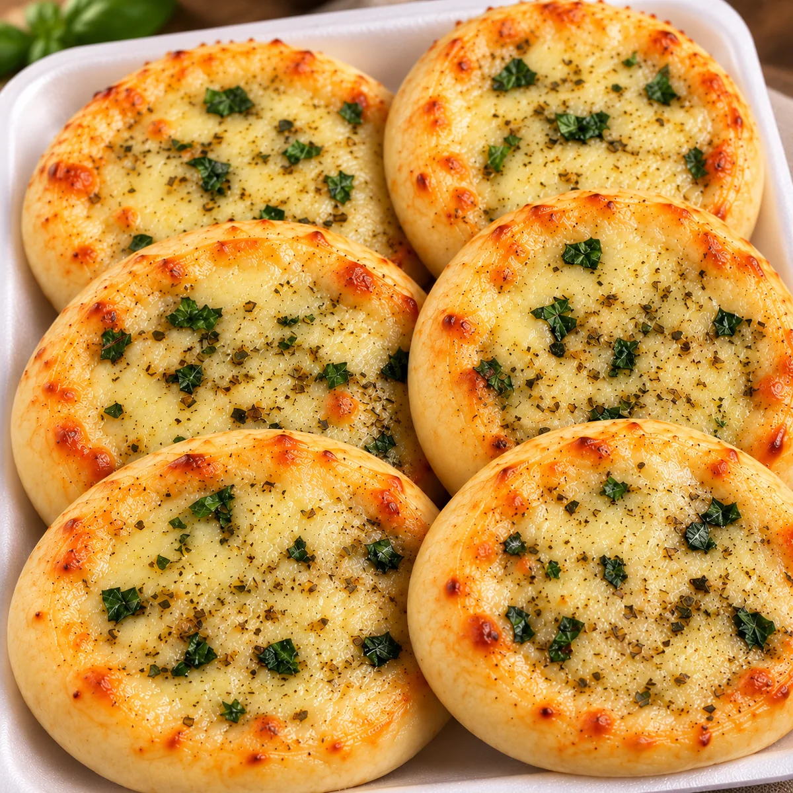
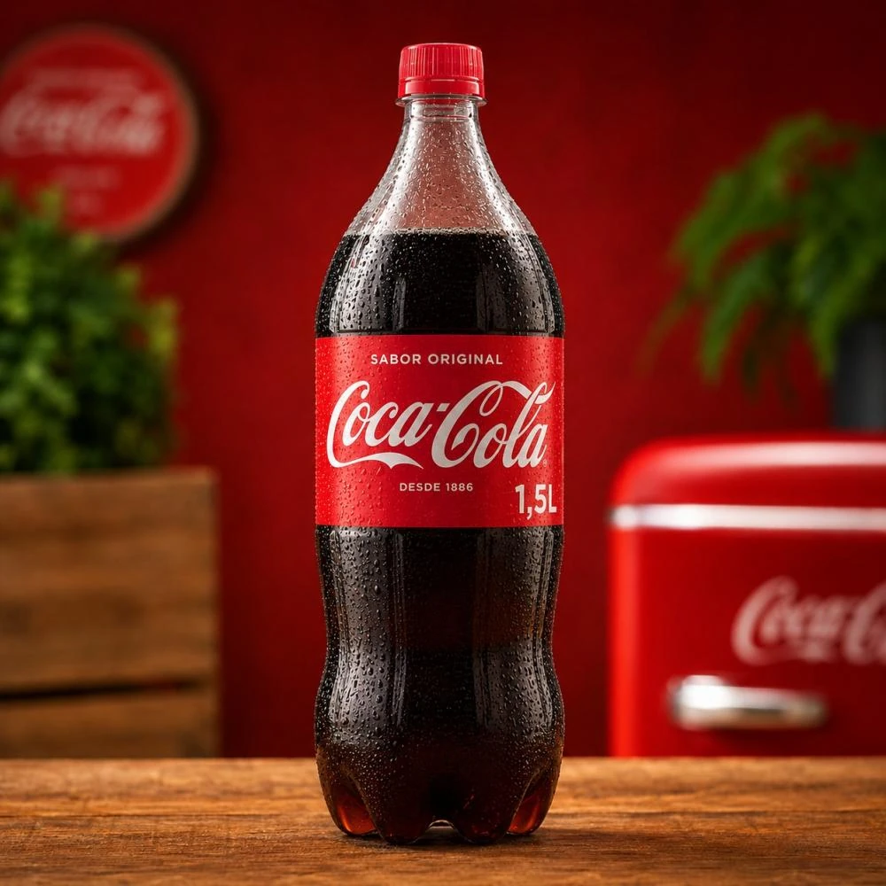
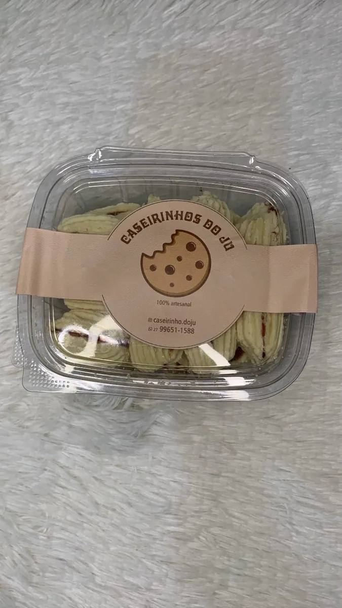

PÃES CASEIROS
Ver pães
Doce + Sal e Cebola
Produção nos finais de semana ou por encomenda.
Escolha pães, biscoitos, casadinhos, esfirras e bebida em um catálogo rápido, organizado e feito para comprar pelo celular.



Confira a disponibilidade dos pães caseiros e das esfirras antes de montar o pedido.
Produção nos finais de semana ou por encomenda.
Disponíveis das 18h30 às 22h nos três dias.
Você pode montar o pedido no site e confirmar disponibilidade, retirada ou entrega pelo WhatsApp.
Amanteigados, pães e casadinhos feitos para o café, o lanche e os momentos de compartilhar.


Escolha o combo, selecione o sabor e adicione ao pedido. Esfirras disponíveis de quinta a sábado, das 18h30 às 22h.
Uma bandeja com 6 esfirras abertas.
R$ 28,0012 esfirras abertas para dividir.
R$ 52,0015 esfirras abertas para a mesa.
R$ 65,0018 esfirras abertas para compartilhar.
R$ 85,00Veja as opções disponíveis para os combos.

01Esfirra aberta de queijo com presunto.

02Esfirra aberta de queijo com manjericão.
Esfirra aberta de carne temperada com cheddar.
Use a busca ou os filtros. O carrinho continua salvo mesmo se você atualizar a página.
Complete seu pedido com Coca-Cola 1,5L e envie tudo junto pelo WhatsApp.


Do biscoito amanteigado ao pão caseiro, o Caseirinhos do Ju reúne opções para o café, o lanche e momentos de compartilhar. Escolha o que deseja e mande o pedido direto para o atendimento.
Veja fotos, opções, pesos, sabores e valores no próprio cardápio.
Altere quantidades e confira o total no carrinho antes de continuar.
Preencha seus dados e o site monta uma mensagem completa para confirmação.
O site organiza o pedido; disponibilidade e entrega são confirmadas pelo atendimento.
Não. O site prepara a mensagem e o atendimento confirma disponibilidade, retirada ou entrega pelo WhatsApp.
As esfirras são vendidas de quinta a sábado, das 18h30 às 22h.
Esses pães são produzidos nos finais de semana ou por encomenda.
Queijo e Presunto, Queijo e Manjericão e Carne Temperada com Cheddar.
Sim. O carrinho é salvo neste navegador para você continuar escolhendo mesmo depois de atualizar a página.